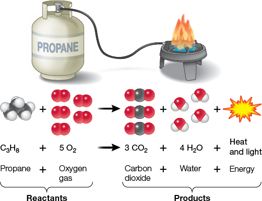

Oxygen molecule
oxygen molecule
There are two atoms of oxygen in an oxygen molecule.
Definition of an oxygen molecule
There are two atoms of oxygen in an oxygen molecule.
Oxygen molecule is a type of:
nonpolar molecule
and
inorganic molecule
.
|
concept map
|
Bonding Partners and Energy May Change in a Chemical Reaction
One molecule of propane (a gas used for cooking) from this burner reacts with five molecules of oxygen gas to give three molecules of carbon dioxide and four molecules of water. This reaction releases energy in the form of heat and light.

|
Properties of an oxygen molecule
-
Charge
-
inherent to all molecules
-
Solubility in water
-
inherent to all nonpolar molecules
- insoluble with respect to a molecule
Structure of an oxygen molecule
-
Has region
-
inherent to all hydrophobic compounds
-
Possesses
-
Has part
An oxygen molecule also does…
- In combustion of fossil fuel during ocean acidification, an electron transfers from a hydrocarbon molecule to an oxygen molecule. Here, the oxygen molecule is an oxidizing agent.
- In combustion of fossil fuel, oxidation — an electron transfers from a hydrocarbon molecule to an oxygen molecule. Here, the oxygen molecule is an oxidizing agent.
- In combustion of fossil fuel, reduction — an electron transfers from a hydrocarbon molecule to an oxygen molecule. Here, the oxygen molecule is an electron recipient.
- In chemical reaction between methane and oxygen, oxidation — an electron transfers from a methane to an oxygen molecule. Here, the oxygen molecule is an oxidizing agent.
- In chemical reaction between methane and oxygen, reduction — an electron transfers from a methane to an oxygen molecule. Here, the oxygen molecule is an electron recipient.
- Reduction — an electron transfers from a chemical to an oxygen molecule. Here, the oxygen molecule is a final electron acceptor.
- In combustion of fossil fuel, oxidation — an electron transfers from a hydrocarbon molecule to an oxygen molecule. Here, the oxygen molecule is an oxidizing agent.
Further reading
- 1.0 Studying Life
- 10.0 Photosynthesis: Energy from Sunlight
- 10.3 Plants Have Adapted Photosynthesis to Environmental Conditions